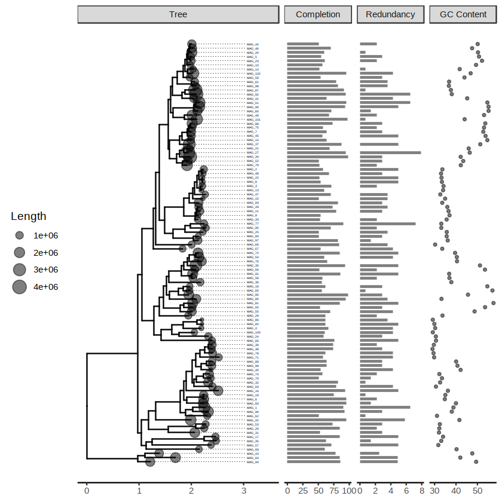

MAGstats¶
A workflow to visualize the completeness and redundancy of your MAGs.

Beginners Guide¶
To visualize the completeness and reduduancy of your MAG, you need to get two files ready (example_data):
- A newick tree file (
MAG_tree.nwk) - A metadata file (
MAG_metadata.tsv) The metadata file must contain these columns in order:MAG_ID Length Completion Redundancy GC_Content, and is tab-delimited.
You can launch this jupyter notebook using binder by clicking  , and upload your files to the
, and upload your files to the example_data folder via the upload button in your project directory (where theindex.ipynb locates). You probably need to modify these two lines to adapt to your file names in the first code block before running through all the codes:
nwk_file <- "MAG_tree.nwk" bin_metadata_file <- "MAG_metadata.tsv"
How to generate input files¶
-
For the tree file, you can use GToTree to extract single-copy marker genes and to get the concatenated multiple sequence alignements. Then use RAxML-NG to build the maximum-likelihood phylogenomic tree. GToTree also generate a tree file by running
fasttree. -
For the metadata file, you can get it via checkM or anvio, and format it using Excel and export it as tsv.
If everything works well, you will get something like this:

Read in MAG tree¶
data_folder <- "./example_data" nwk_file <- "MAG_tree.nwk" bin_metadata_file <- "MAG_metadata.tsv" path2nwk_file <- paste(data_folder, nwk_file, sep = "/") path2metadata_file <- paste(data_folder, bin_metadata_file, sep = "/") path2nwk_file path2metadata_file
'./example_data/MAG_tree.nwk'
'./example_data/MAG_metadata.tsv'
load packages¶
library("RColorBrewer") library('ggplot2') library('ggtree')
ggtree v1.14.6 For help: https://guangchuangyu.github.io/software/ggtree If you use ggtree in published research, please cite the most appropriate paper(s): - Guangchuang Yu, David Smith, Huachen Zhu, Yi Guan, Tommy Tsan-Yuk Lam. ggtree: an R package for visualization and annotation of phylogenetic trees with their covariates and other associated data. Methods in Ecology and Evolution 2017, 8(1):28-36, doi:10.1111/2041-210X.12628 - Guangchuang Yu, Tommy Tsan-Yuk Lam, Huachen Zhu, Yi Guan. Two methods for mapping and visualizing associated data on phylogeny using ggtree. Molecular Biology and Evolution 2018, accepted. doi: 10.1093/molbev/msy194
read in tree¶
tree <- read.tree(path2nwk_file) str(tree)
List of 5 $ edge : int [1:200, 1:2] 102 103 103 104 104 102 105 106 107 108 ... $ edge.length: num [1:200] 0.971 0.243 0.139 0.588 0.275 ... $ Nnode : int 100 $ node.label : chr [1:100] "OROOT" "" "" "" ... $ tip.label : chr [1:101] "MAG_94" "MAG_64" "MAG_43" "MAG_16" ... - attr(*, "class")= chr "phylo" - attr(*, "order")= chr "cladewise"
read in metadata¶
metadata_df <- read.table(path2metadata_file, header = TRUE, sep = "\t", as.is = TRUE, stringsAsFactors = FALSE) head(metadata_df)
| MAG_ID | Length | Completion | Redundancy | GC_Content |
|---|---|---|---|---|
| <chr> | <int> | <dbl> | <dbl> | <dbl> |
| MAG_1 | 2495192 | 90.65 | 6.5 | 38.80 |
| MAG_10 | 722913 | 56.12 | 0.0 | 49.36 |
| MAG_100 | 705754 | 60.43 | 4.3 | 29.17 |
| MAG_101 | 2446458 | 97.12 | 0.7 | 44.02 |
| MAG_102 | 2626036 | 95.68 | 4.3 | 46.83 |
| MAG_11 | 1024210 | 79.14 | 2.9 | 36.51 |
associate metadata and tree¶
p <- ggtree(tree) + theme_tree2() p <- p %<+% metadata_df + geom_tiplab(size=1, offset=0.5, align=TRUE, linesize=.2, hjust=-0.1) + geom_tippoint(aes(size=Length), alpha=0.5) data_df <- data.frame(id=tree$tip.label, data=metadata_df[metadata_df$MAG_ID%in%tree$tip.label, c('Length', 'Completion', 'Redundancy', 'GC_Content')]) head(data_df)
Warning message: “Duplicated aesthetics after name standardisation: size”
| id | data.Length | data.Completion | data.Redundancy | data.GC_Content |
|---|---|---|---|---|
| <fct> | <int> | <dbl> | <dbl> | <dbl> |
| MAG_94 | 2495192 | 90.65 | 6.5 | 38.80 |
| MAG_64 | 722913 | 56.12 | 0.0 | 49.36 |
| MAG_43 | 705754 | 60.43 | 4.3 | 29.17 |
| MAG_16 | 2446458 | 97.12 | 0.7 | 44.02 |
| MAG_32 | 2626036 | 95.68 | 4.3 | 46.83 |
| MAG_70 | 1024210 | 79.14 | 2.9 | 36.51 |
plot¶
p <- facet_plot(p + xlim_tree(3.5), panel="Completion", data=data_df, geom=geom_segment, aes(x=0, xend=Completion, y=y, yend=y), size=1, alpha=.5) p <- facet_plot(p, panel="Redundancy", data=data_df, geom=geom_segment, aes(x=0, xend=Redundancy, y=y, yend=y), size=1, alpha=.5) p <- facet_plot(p, panel="GC Content", data=data_df, geom=geom_point, aes(x=GC_Content), alpha=.5, size=1) p <- p + theme(legend.position = 'left') + scale_colour_gradient(low = "blue", high = "red") #scale_color_gradient2(midpoint = mid, low = "blue", mid = "white", high = "red", space = "Lab" )# library(grid) gt = ggplot_gtable(ggplot_build(p)) gt$widths[7] = 3*gt$widths[7] # increase the width of Tree panel grid.draw(gt) # save the plot ggsave(filename="MAGstats.png", plot = last_plot(), path="./", scale = 1, width = 297, height = 210, units = "mm", dpi = 300, limitsize = FALSE)
